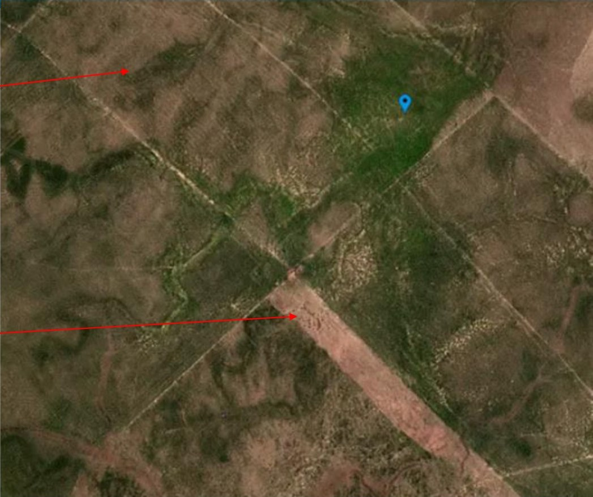

Arbóreas removidas
Qualquer remoção de vegetação arbórea é supressão. Polígono só onde havia arbórea na imagem anterior.

Siga o caminho de decisão e veja, em cada bloco, casos reais em imagens Sentinel-2 e Planet.
Explorar a chave ↓Qualquer remoção de vegetação arbórea é supressão. Polígono só onde havia arbórea na imagem anterior.
Sem arbóreas removidas, decide a exposição do solo na Sentinel do ano e a limpeza mecanizada intensa.
Supressão vista na Planet mas não observável na Sentinel não é inserida (exceto com polígono DETER).
Sempre supressão: limpeza mecanizada para semeadura, verde-limão brilhante e formato geométrico.